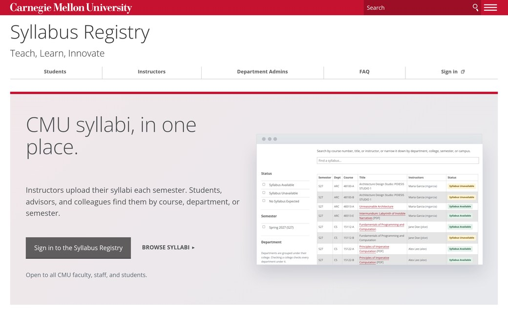

Sites and Apps Built With the Kit
See how CMU sites and apps put the template and the kit’s components to use.

Canvas (Service Description) CMS
The Cascade site for CMU's Canvas: how to sign in, request a course and get help.
Canvas Course Requests App
Where instructors request a Canvas course site for an upcoming semester.
Visit Canvas Course Requests [login required]

Carnegie Mellon Web Markdown CMS
A GitHub Pages theme that turns plain Markdown into pages in CMU style, with the kit's code blocks and callouts.
Core4 Student Dashboard App
Where students see how their courses and experiences build the four Core Competencies.
Eberly Programs App
Where graduate students, postdocs and staff sign up for the Eberly Center's teaching seminars and workshops.

Minecraft Multiplayer Server CMS
How to join Carnegie Mellon's Minecraft server, and its events. Built from the template and the kit, with no CSS of its own.

PlaceMellon App
Placeholder photos of Carnegie Mellon at any size, for mockups and prototypes. Its docs use only the template and the kit.

Spring Carnival Binder App
Spring Carnival's booth and operations app, where organizations watch the safety video and sign the waiver.

Syllabus Registry App
Where CMU instructors post their syllabi and students find them: a Cascade site and a web app that match. The kit started here.


Syllabus Registry (Service Description) CMS
The Syllabus Registry's Cascade site, for students, instructors and department admins, with a hero that leads into the app.
Built something with the kit? Tell us on GitHub, and we'll add it here.